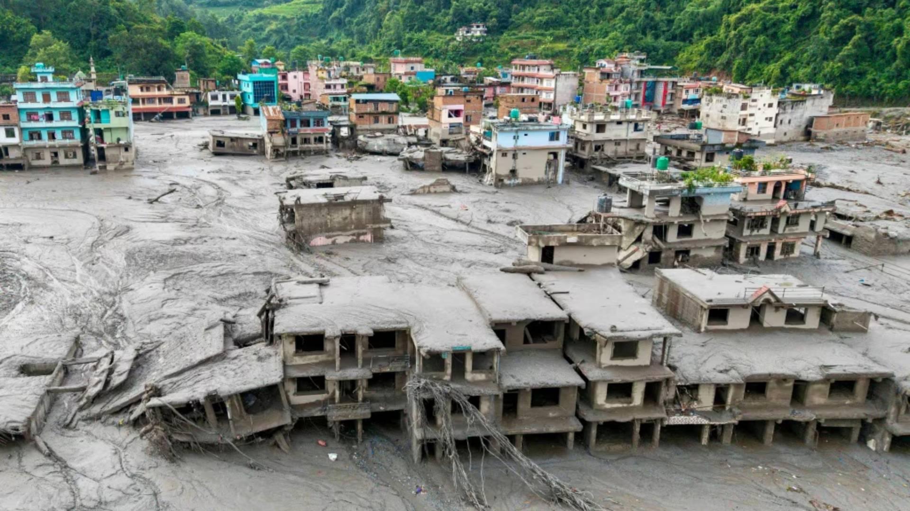

Nepal's desperate search for thousands still missing
2026, September 3
Nepal
This Reuters report captures the human tragedy behind Nepal's catastrophic floods, where families are still searching for relatives more than a week after the disaster.On August 26, 2026, a collapse of ice, rock and mud in the Himalayas sent a massive surge down the Lhende Khola and Trishuli river systems, devastating communities near Nepal's border with China. The latest figures cited by Reuters put the death toll at more than 1,200, with over 4,200 people still missing.
🧱 The "wall of the missing"
At Kathmandu's Tribhuvan University Teaching Hospital, families have created a heartbreaking makeshift identification system: photographs of missing people are posted alongside photographs of bodies recovered but not yet identified.
People examine the photographs looking for anything recognizable—a face, clothing, scars or tattoos—that might provide an answer about a missing family member.
One of those searching is Sati Sigdel, whose cousin Sweety Paithan disappeared in the disaster. Sigdel visits the hospital wall every day, but days after posting her cousin's photograph, there was still no news.
⚠️ Why the search is so difficult
The flood didn't simply wash people downstream. It buried huge areas beneath an enormous quantity of debris.
The UN Development Programme estimates that approximately 2.2 million tonnes of debris—mud, rocks, sediment and destroyed buildings—were left behind.
Some of the most difficult searches involve hydroelectric power projects, where workers may have been trapped inside tunnels. Hundreds remain unaccounted for in these facilities, making them a major focus of rescue operations.
💔 Hope is fading
After more than a week, rescuers are increasingly shifting from a rescue operation toward recovery, rehabilitation and reconstruction. That doesn't mean every search has stopped—teams are still looking—but the likelihood of finding people alive decreases rapidly as time passes.
Some families have already begun performing funeral rituals and cremating effigies for relatives whose bodies have not been recovered, seeking some form of closure in the absence of remains.
And yet, the "wall of the missing" represents something important: families are not ready to give up until they have an answer.